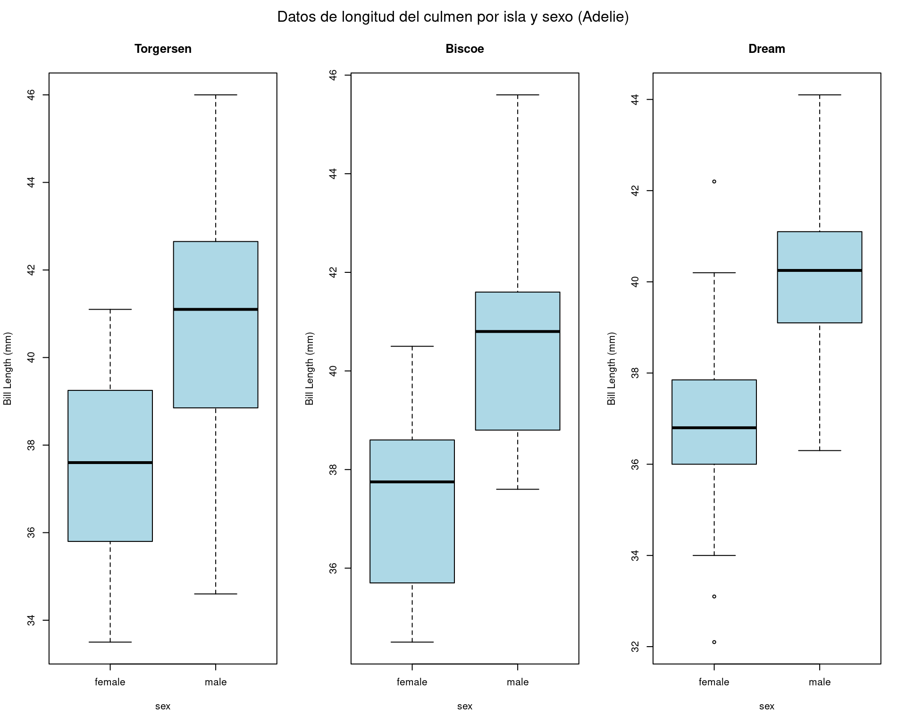
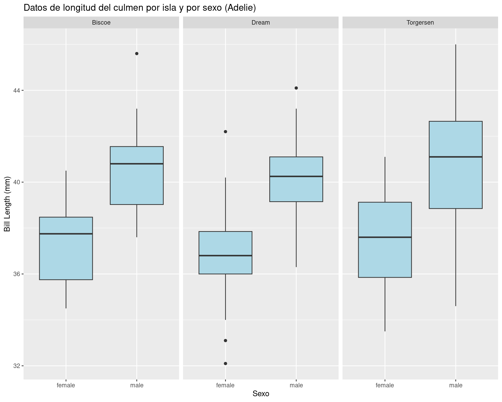
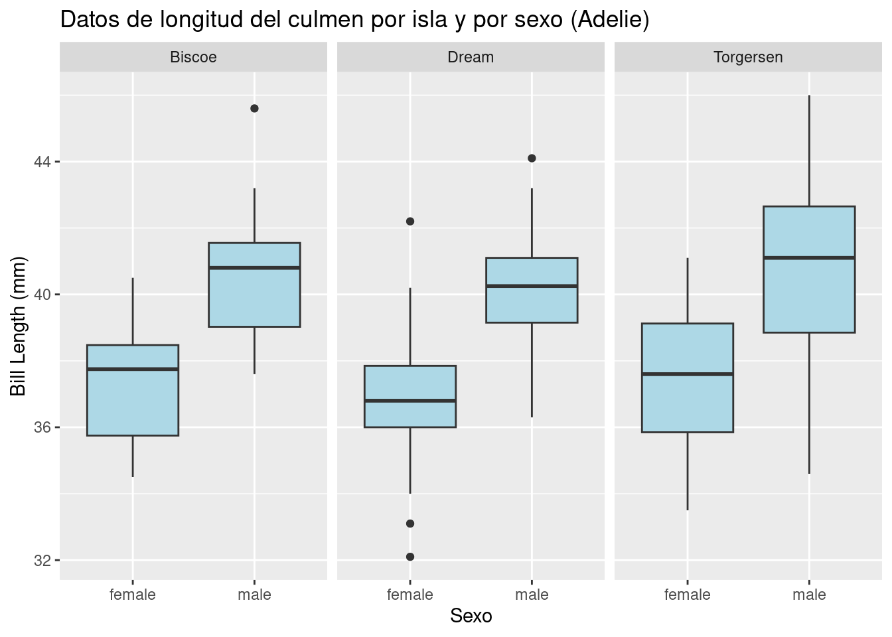
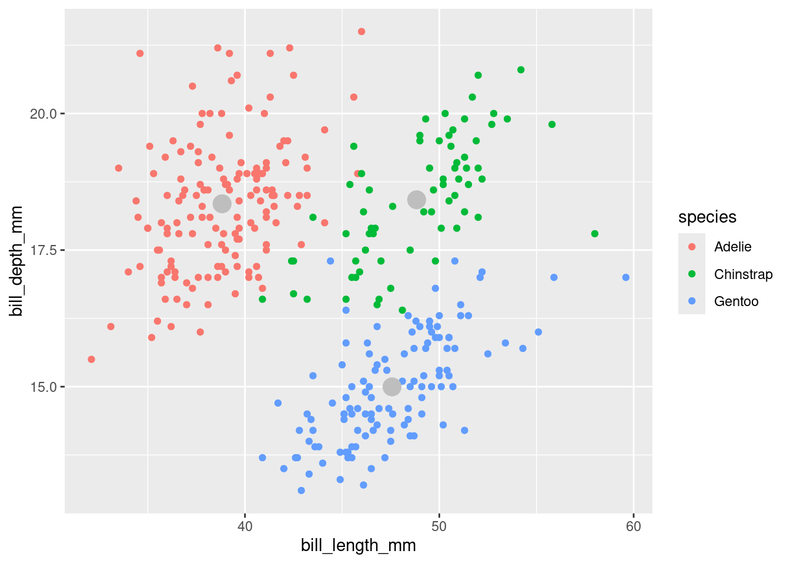
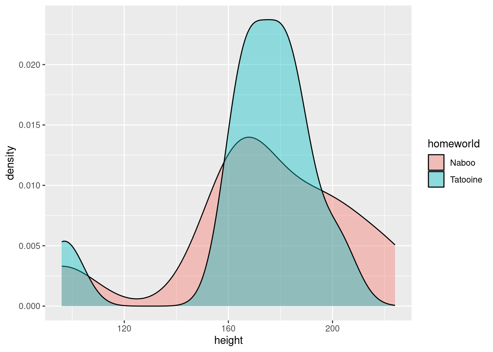
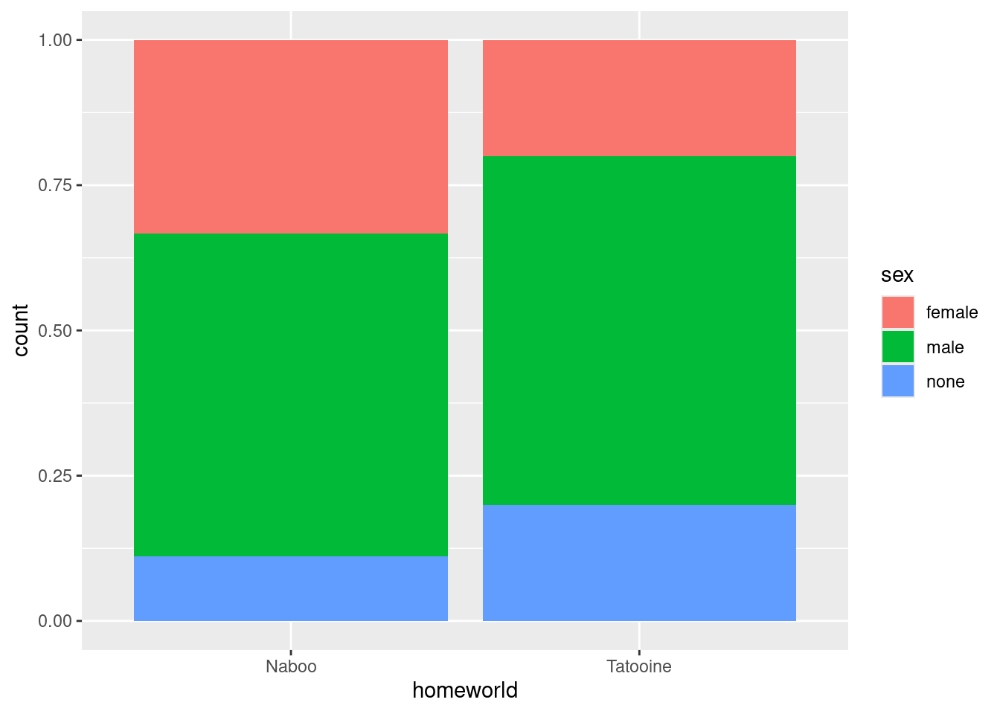
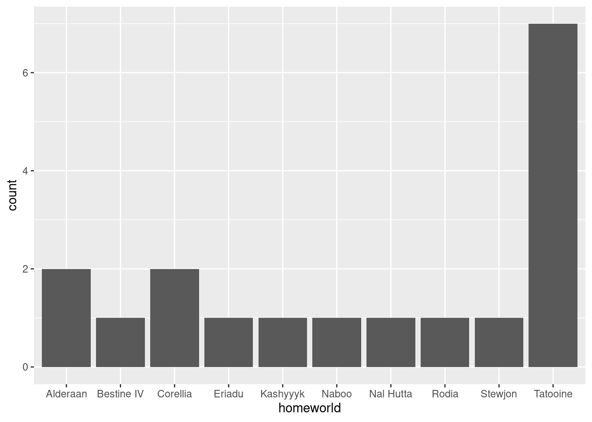
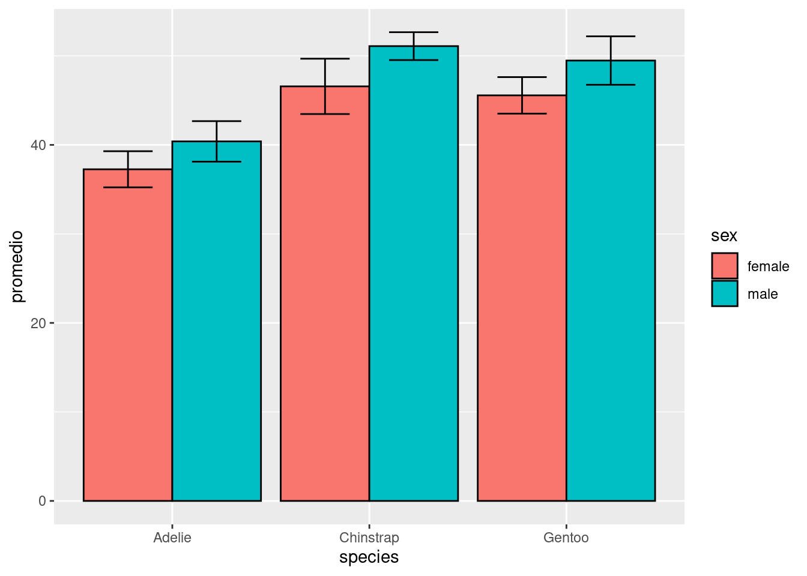
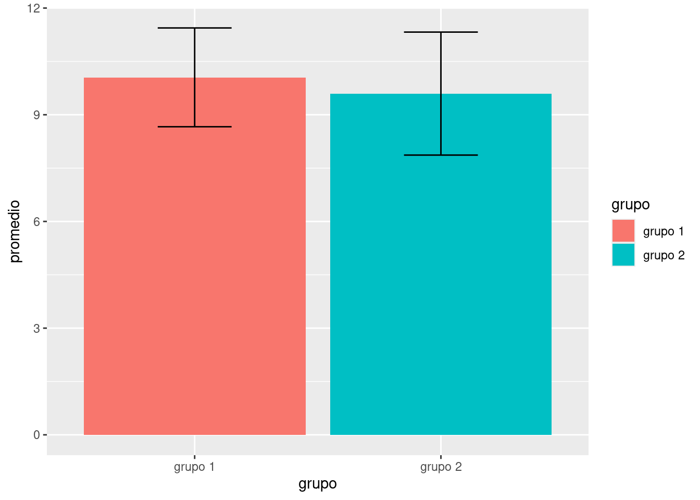
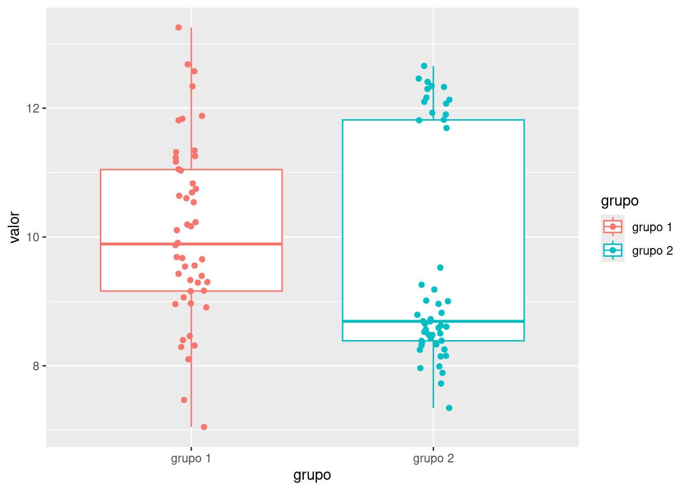

library(tidyverse)
library(here)
penguins <- read_csv(here("data/palmer_penguins.csv")) %>%
na.omit()
penguins_adelie <- penguins[penguins$species == "Adelie", ]
# definir area de grafico
par(mfrow = c(1, 3), oma = c(0, 0, 2, 0))
# Lista de islas
islas <- unique(penguins_adelie$island)
# forloop para islas
for (isla in islas) {
boxplot(bill_length_mm ~ sex,
data = filter(penguins_adelie, island == isla),
main = isla,
ylab = "Bill Length (mm)",
col = "lightblue")
}
# Agregar titulo
mtext("Datos de longitud del culmen por isla y sexo (Adelie)", outer = TRUE)ggplot2: Visualización de datos
Visualización con R base
── Attaching core tidyverse packages ──────────────────────── tidyverse 2.0.0 ──
✔ dplyr 1.1.4 ✔ readr 2.1.5
✔ forcats 1.0.0 ✔ stringr 1.5.2
✔ ggplot2 4.0.0 ✔ tibble 3.3.0
✔ lubridate 1.9.4 ✔ tidyr 1.3.1
✔ purrr 1.1.0
── Conflicts ────────────────────────────────────────── tidyverse_conflicts() ──
✖ dplyr::filter() masks stats::filter()
✖ dplyr::lag() masks stats::lag()
ℹ Use the conflicted package (<http://conflicted.r-lib.org/>) to force all conflicts to become errors
here() starts at /cloud/project
Rows: 344 Columns: 8
── Column specification ────────────────────────────────────────────────────────
Delimiter: ","
chr (3): species, island, sex
dbl (5): bill_length_mm, bill_depth_mm, flipper_length_mm, body_mass_g, year
ℹ Use `spec()` to retrieve the full column specification for this data.
ℹ Specify the column types or set `show_col_types = FALSE` to quiet this message.
Visualización con ggplot
library(tidyverse)
library(here)
penguins <- read_csv(here("data/palmer_penguins.csv")) %>%
na.omit()
penguins %>%
filter(species == "Adelie") %>%
ggplot(aes(x = sex, y = bill_length_mm))+
geom_boxplot(fill = "lightblue")+
facet_wrap(~island)+
labs(title = "Datos de longitud del culmen por isla y por sexo (Adelie)",
y = "Bill Length (mm)",
x = "Sexo")Rows: 344 Columns: 8
── Column specification ────────────────────────────────────────────────────────
Delimiter: ","
chr (3): species, island, sex
dbl (5): bill_length_mm, bill_depth_mm, flipper_length_mm, body_mass_g, year
ℹ Use `spec()` to retrieve the full column specification for this data.
ℹ Specify the column types or set `show_col_types = FALSE` to quiet this message.
Gramática de los gráficos
“grammar gives language rules” - Liland Wilkinson
- ggplot es un sistema de visualización en R
- Parte del ecosistema tidyverse
- Basado en la Grammar of Graphics de Leland Wilkinson

Gramática de los gráficos
Como diseñar un sistema (gramática) que permita:
- Calcular la posición de los datos
- Realizar gráficos atractivos
- Seleccionar un tipo de gráfico

Gramática de los gráficos
Como diseñar un sistema (gramática) que permita:
- Calcular la posición de los datos
- Realizar gráficos atractivos
- Seleccionar un tipo de gráfico

Gramática de los gráficos
Data: Información que queremos visualizar. (La gramática requiere un formato tidy)
Mappings: Constituye la descripción de como las variables son asignadas (mapping) a atributos esteticos (aesthetics)
Geoms: Representación de los datos (puntos, líneas, polígonos, barras, etc)



Algunos otros ejemplso aquí


Ejercicio: Un geom_point() es un geom_point() es un geom_point()
Utilizando tus conocimientos previos, crea un gráfico de dispersión con la base de datos de penguins donde se muestre la longitud del pico en el eje x y la profundidad del pico en el eje y. Utiliza el color para distinguir las especies.
Ademas, agrega un punto con el valor promedio de la longitud y profundidad del pico de cada especie en color gris.

Ejercicio: Un geom_point() es un geom_point() es un geom_point()
ver codigo
#make a dataframe with mean values of bill_depth_mm and bill_length_mm
promedios <- penguins %>%
group_by(species) %>%
summarise(mean_bill_length = mean(bill_length_mm, na.rm = TRUE),
mean_bill_depth = mean(bill_depth_mm, na.rm = TRUE))
ggplot()+
geom_point(data = penguins, aes(x = bill_length_mm, y = bill_depth_mm, color = species)) +
geom_point(data = promedios, aes(x = mean_bill_length, y = mean_bill_depth),
size = 5, color = "grey") 
Ejercicio: Una galaxía muy lejana
Abre la tabla starwars.csv que se encuentra en el directorio de databases y utilizando pipes genera los siguientes objetos:
- Una gráfico de densidad donde se compare la distribución de los valore de altura
heightde los planetas Tatooine y Naboo, excluyendo los androides. - Una gráfica de barras de los mismos planetas y excluyendo androides donde se muestre la proporción de sexos.
- Una gráfica de barras donde se muestre el número de personajes de cada planeta del filme A New Hope

Ejercicio: Una galaxía muy lejana
ver codigo
starwars <- read_csv(here("data/starwars.csv"))Rows: 87 Columns: 14
── Column specification ────────────────────────────────────────────────────────
Delimiter: ","
chr (11): name, hair_color, skin_color, eye_color, sex, gender, homeworld, s...
dbl (3): height, mass, birth_year
ℹ Use `spec()` to retrieve the full column specification for this data.
ℹ Specify the column types or set `show_col_types = FALSE` to quiet this message.ver codigo
#ejercicio e1
starwars %>%
filter(homeworld %in% c("Tatooine", "Naboo")) %>%
filter(species != "droid") %>%
ggplot(., aes(x = height, fill = homeworld))+
geom_density(alpha = 0.4)
Ejercicio: Una galaxía muy lejana
ver codigo
starwars %>%
filter(homeworld %in% c("Tatooine", "Naboo")) %>%
filter(species != "droid") %>%
ggplot(.,aes(x = homeworld, fill = sex))+
geom_bar(position = "fill")
Ejercicio: Una galaxía muy lejana
ver codigo
# ejercicio e3
starwars %>%
filter(str_detect(films, "A New Hope")) %>%
ggplot(., aes(x = homeworld)) +
geom_bar()
Boxplots

La caja de un boxplot comienza en el primer cuartil Q1 (25%) y termina en el tercero Q3 (75%). Por lo tanto, la caja representa el 50% de los datos centrales, con una línea que representa la mediana.
A cada lado de la caja se dibuja un segmento con los datos más lejanos sin contar los valores atípicos (outliers) del boxplot, que en caso de existir, se representarán con círculos.
Boxplots

Ejercicio
Utilizando la base de datos penguins, realiza una gráfica de barras donde se muestre el promedio desviación estándar de la longitud del pico de cada especie y sexo. Distingue los sexos por el color de relleno de las barras.
Recuerda que puedes incluir el parámetros position = position_dodge() para separar las barras entre grupos
Ejercicio
ver codigo
penguins %>%
group_by(species, sex) %>%
summarise(promedio = mean(bill_length_mm, na.rm = TRUE),
desvest = sd(bill_length_mm, na.rm= TRUE),
.groups = "drop") %>%
ggplot(., aes(x = species, y = promedio, fill = sex)) +
geom_col(position = position_dodge(), color = "black")+
geom_errorbar(aes(ymin = promedio - desvest, ymax = promedio + desvest),
width = 0.5, position = position_dodge(0.9))
Los amigos no permiten que sus amigos hagan gráficas de barras
- Abre la tabla
datos_demo.csvque se encuentra en la carpeta de datos - Sin hacer ningún tipo de observación previa, haz una gráfica donde se muestre el promedio \(\pm\) desviación estándar. Para ello, utiliza las funciones
group_by()ysummarise()que hemos visto anteriormente. - Ahora, utilizando el set de datos completo, gráfica la dispersión de los datos con
geom_point()y añade un boxplot congeom_boxplot().

Los amigos no permiten que sus amigos hagan gráficas de barras
ver codigo
demo <- read_csv(here("data/datos_demo.csv"))Rows: 100 Columns: 2
── Column specification ────────────────────────────────────────────────────────
Delimiter: ","
chr (1): grupo
dbl (1): valor
ℹ Use `spec()` to retrieve the full column specification for this data.
ℹ Specify the column types or set `show_col_types = FALSE` to quiet this message.ver codigo
# promedios
demo %>%
group_by(grupo) %>%
summarise(promedio = mean(valor),
desvest = sd(valor)) %>%
ggplot(.,aes(x = grupo, y = promedio, fill = grupo))+
geom_col()+
geom_errorbar(aes(ymin = promedio - desvest, ymax = promedio + desvest),
width = 0.3)
Los amigos no permiten que sus amigos hagan gráficas de barras
ver codigo
# datos completos
demo %>%
ggplot(.,aes(x = grupo, y = valor, color = grupo))+
geom_boxplot()+
geom_point(position = position_jitterdodge(0.2))